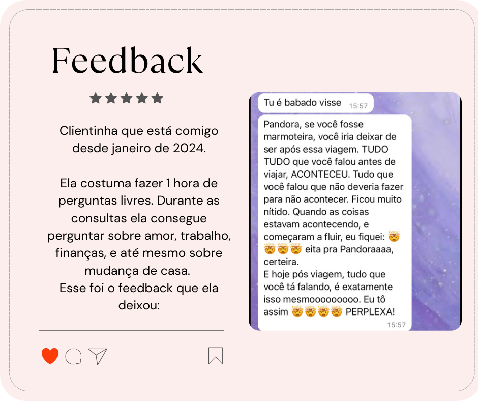
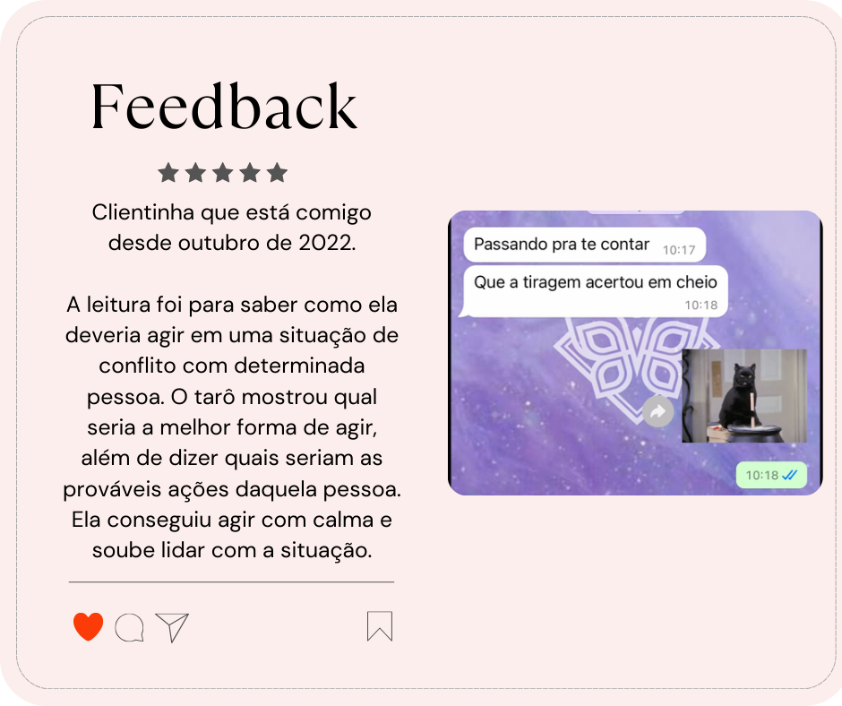
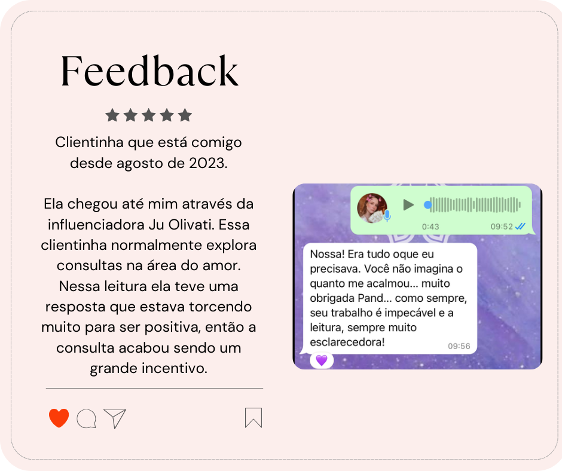
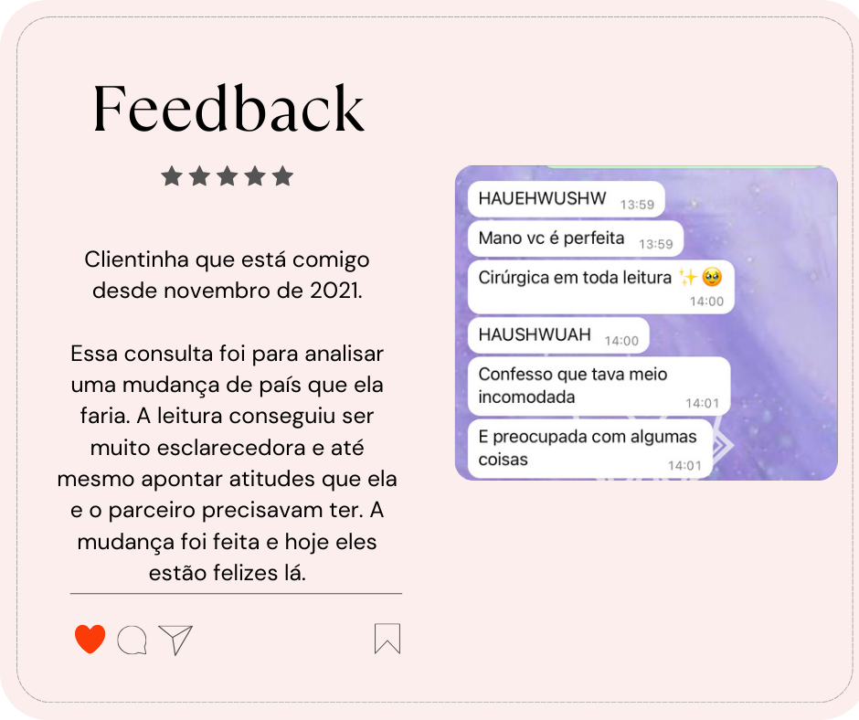

Sobre o Oráculo
Bem-vindo ao universo do Tarô Místico das Fadas! Aqui, cada carta é um portal para o autoconhecimento, guiado pela sabedoria e leveza dos seres feéricos. Meu trabalho é ser a ponte entre você e as energias do universo, trazendo mensagens com clareza, direcionamento e um toque de magia para sua jornada.
Com carinho e intuição, vamos desvendar os caminhos que se abrem para você.
Agende sua Consulta
As leituras são feitas de forma online, com toda a atenção e privacidade que você merece. Agende sua consulta através do whatsapp, mas sinta-se a vontade para conhecer minhas outras redes!
Perguntas Frequentes
Como funciona uma consulta de tarô online?
As consultas são realizadas por mensagens de áudio ou texto em um ambiente seguro e confidencial. Eu me conecto com sua energia, embaralho as cartas e te explico cada uma das interpretações. E mesmo após o fim da consulta eu me disponho a tirar suas dúvidas caso elas surjam posteriormente.
Preciso ter uma pergunta específica?
Não necessariamente. Ofereço diferentes formatos para se adequar à sua necessidade: você pode escolher entre tiragens temáticas (Amor, Carreira, Família, etc), fazer perguntas avulsas para questões pontuais, ou agendar uma consulta por tempo para explorar diversas áreas livremente. O importante é encontrar a modalidade que mais ressoa com você no momento.
O tarô prevê o futuro?
O tarô é um guia, não uma sentença. Ele mostra tendências, possibilidades e conselhos com base na sua energia e atitudes no presente. O futuro está sempre em construção e em suas mãos; o oráculo serve para iluminar os melhores caminhos a seguir.
É necessário marcar horário com antecedência?
Meus atendimentos são realizados por ordem de chegada, então não é necessário agendar com antecedência. Lembrando que realizo atendimentos de segunda a sexta das 09:00 às 18:00.
Quais são os horários de atendimento?
De segunda a sexta das 09:00 às 18:00. Para mais informações entre em contato via whatsapp
O que as clientinhas dizem



